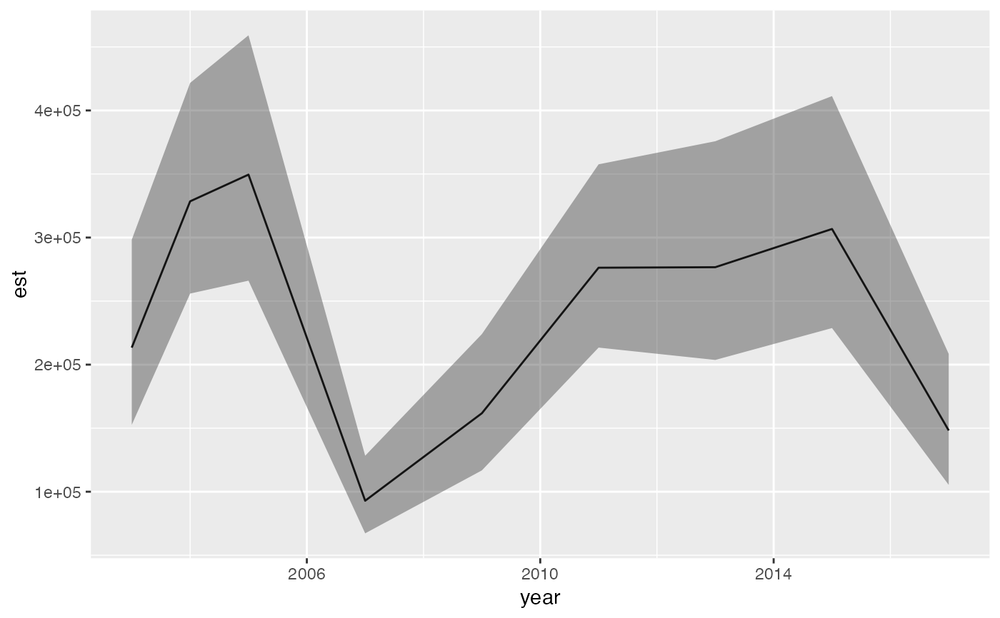

Extract a relative biomass/abundance index or a center of gravity
get_index(
obj,
bias_correct = FALSE,
level = 0.95,
area = 1,
silent = TRUE,
...
)
get_cog(
obj,
bias_correct = FALSE,
level = 0.95,
format = c("long", "wide"),
area = 1,
silent = TRUE,
...
)Output from predict.sdmTMB() with return_tmb_object = TRUE.
Should bias correction be implemented TMB::sdreport()?
The confidence level.
Grid cell area. A vector of length newdata from
predict.sdmTMB() or a value of length 1, which will be repeated
internally to match.
Silent?
Passed to TMB::sdreport().
Long or wide.
For get_index():
A data frame with a columns for time, estimate, lower and upper
confidence intervals, log estimate, and standard error of the log estimate.
For get_cog():
A data frame with a columns for time, estimate (center of gravity in x and y
coordinates), lower and upper confidence intervals, and standard error of
center of gravity coordinates.
Geostatistical random-field model-based indices of abundance (along with many newer papers):
Shelton, A.O., Thorson, J.T., Ward, E.J., and Feist, B.E. 2014. Spatial semiparametric models improve estimates of species abundance and distribution. Canadian Journal of Fisheries and Aquatic Sciences 71(11): 1655--1666. doi:10.1139/cjfas-2013-0508
Thorson, J.T., Shelton, A.O., Ward, E.J., and Skaug, H.J. 2015. Geostatistical delta-generalized linear mixed models improve precision for estimated abundance indices for West Coast groundfishes. ICES J. Mar. Sci. 72(5): 1297–1310. doi:10.1093/icesjms/fsu243
Geostatistical model-based centre of gravity:
Thorson, J.T., Pinsky, M.L., and Ward, E.J. 2016. Model-based inference for estimating shifts in species distribution, area occupied and centre of gravity. Methods Ecol Evol 7(8): 990–1002. doi:10.1111/2041-210X.12567
Bias correction:
Thorson, J.T., and Kristensen, K. 2016. Implementing a generic method for bias correction in statistical models using random effects, with spatial and population dynamics examples. Fisheries Research 175: 66–74. doi:10.1016/j.fishres.2015.11.016
# \donttest{
# Use a small number of knots for this example to make it fast:
pcod_spde <- make_mesh(pcod, c("X", "Y"), n_knots = 60, type = "kmeans")
m <- sdmTMB(
data = pcod,
formula = density ~ 0 + as.factor(year),
time = "year", mesh = pcod_spde, family = tweedie(link = "log")
)
# Note `return_tmb_object = TRUE` and the prediction grid:
predictions <- predict(m, newdata = qcs_grid, return_tmb_object = TRUE)
ind <- get_index(predictions)
#> Bias correction is turned off.
#> It is recommended to turn this on for final inference.
if (require("ggplot2", quietly = TRUE)) {
ggplot(ind, aes(year, est)) + geom_line() +
geom_ribbon(aes(ymin = lwr, ymax = upr), alpha = 0.4)
}

cog <- get_cog(predictions)
cog
#> year est lwr upr se coord
#> 1 2003 463.5260 446.4141 480.6380 8.730751 X
#> 2 2004 476.7402 466.4506 487.0298 5.249898 X
#> 3 2005 470.6887 457.7493 483.6281 6.601835 X
#> 4 2007 480.8949 464.5560 497.2338 8.336336 X
#> 5 2009 477.2028 457.9182 496.4874 9.839268 X
#> 6 2011 470.5112 457.6004 483.4221 6.587303 X
#> 7 2013 471.9877 455.6076 488.3677 8.357328 X
#> 8 2015 463.0289 449.6441 476.4136 6.829060 X
#> 9 2017 470.5220 455.4189 485.6251 7.705796 X
#> 10 2003 5757.8611 5739.8545 5775.8677 9.187187 Y
#> 11 2004 5732.5035 5720.8786 5744.1284 5.931175 Y
#> 12 2005 5763.0315 5750.1526 5775.9105 6.571025 Y
#> 13 2007 5738.2312 5716.8425 5759.6200 10.912838 Y
#> 14 2009 5734.0287 5713.3605 5754.6970 10.545220 Y
#> 15 2011 5747.1037 5733.6282 5760.5793 6.875406 Y
#> 16 2013 5747.6447 5728.9691 5766.3204 9.528583 Y
#> 17 2015 5753.9699 5736.8439 5771.0958 8.737907 Y
#> 18 2017 5755.9729 5739.6443 5772.3016 8.331093 Y
# }